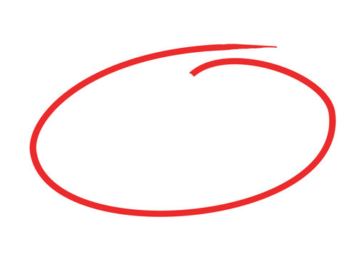

Do you want to read yet another boring guide for how to set up a web server? One that doubles as an MC server? One that costs only $50 upfront and has cheap electricity costs? Well you've come to the right place.
Anything can serve as a web server. All it needs to be able to do is give a file as a response to a http(s) request. But wait, what is https?
The difference between http and https is simple: Anyone can do http, it's just a way to give information back and forth, but with https it's encrypted.
Encryption is quite simple, but a bit weird to get your head around. The classic way to explain is with keys and locks - that's boring and confusing for me, so here:
So there's one more piece to make HTTP into HTTPS - your browser wants to ensure that when you go to https://dungewar.com, it's the dungewar.com, not some fake website intercepting your traffic and giving the same html. So, it asks a known good guy - in this case Let's Encrypt - and asks them to verify this dungewar.com guy. Since I already set it up, my raspberry pi does all the stuff needed and then BAM your browser knows it's the real dungewar.com.
So we were talking about hardware, but what do you actually need? Well ideally, something with ethernet, it's much more reliable than wifi. Ideally doesn't use up too much power, this is a budget server after all.
Raspberry PI, just what I was looking for. I was waiting for one for a long time, and when my robotics team was throwing out old PIs for being too slow, I took one and turned it into a server. It was a raspi V1.2 B, or in other words, total potato. Around 10 years old at this point, it gave web requests, but not much more. It was so bad that I had to move over compiling typescript onto my computer, because it was taking 5 minutes to do. However, it being an old PI, it broke down. Badly. It just started overheating, no matter whether anything was plugged in (suffice to say, it was done for). So, I decided to invest real money into this project, and bought the cheapest raspi 5, the 2GB version. In hindsight I should have bought the 4GB one, but more on that later. In any case, it was leaps and bounds above the previous one and for $50, it was more than good enough. I was ready... to move onto
What should you use to run a server?
To begin, connect to the server. You've got a nice computer connected to the internet but it might as well be a cup of coffee except with coffee you can drink it and with a PI well if you wanted to drink that you would have to melt it and make sure it doesn't oxidize for that you'd need a blowtorch and bottle of inert gas but that costs extra money, so we're going for plan B.
Unless you want to navigate through PI OS and want a dedicated monitor and keyboard and mouse be restricted to editing the server when you're physically next to it, you're gonna want to connect externally. The best way to do that is to SSH (Super (cool) Secure Shell) to it. It uses encryption via a public and private key pair, you give your PI the public key and keep the private key (YOU DONT GIVE IT TO OTHERS THAT WOULD KILL YOU).
Well, realistically it's pretty simple software. It just needs to
give a few static (nonchanging) files whenever someone asks for them. I
went for lighttpd, then switched over to caddy
as part of an attempt to fix my .php with buzzer issues (I may make a
post on this in the future). Very easy to setup, just do
sudo apt install caddy and edit caddy config
in /etc/caddy/ to suit your needs. Need help? Ask google.
AI is OK, but Stack Overflow is still superior in many ways, for
instance in not hallucinating. After you've got that setup, it's time to
move into
So the difference between frontend and backend is simple: frontend
gives your browser files to run, backend just has the server run them
(not the same ones, you get what I mean). I went for pm2 (a
server manager) along with simple boring JS node (I used to
do TS node but the old raspi was too slow to compile the TS
into JS, it would be fine now on the raspi 5).
People can't just connect to your computer if you host a server. Why? Attackers. Your computer has many ports. Those ports can be used as trading centers, and can bring in huge commerce via water-based transport to the place they're established in. Common ports your server wants to use would be 443 (https), 80 (http), and 22 (ssh). If you want some other device on the same network to access them, that's easy, just disable your firewall (who needs one anyway). If you want someone elsewhere to open it, that's a little bit more difficult. You need to tell your router that when someone asks for port 80, it should direct them to the raspberry pi. The language of router is different depending on your router, every guy speaks slightly differently, but connecting to the base ip (192.168.XX.1) tells you what you need. It's not too bad once you learn their language.
How do you make all this work together? Magic. That's right, take out your wand and start casting spells. To make it work, you need these:
I mentioned hosting a minecraft server, that's very easy once you got
everything set up. Just download PAPER (it's much more optimized than
what Microsoft/Mojang gives), and run it give it 1200MB max (the JVM
will use an additional 500MB, the rest is for web server and system).
Open up port 22565 as minecraft uses that (use UDP). I recommend setting
up backups, via a separate USB drive and cronjob, but
honestly it's pretty easy.
One-way communication. Whereas TCP is like "oh did you receive that packet? no? well let me resend? can you confirm?", UDP is like "here's a packet. You didn't get it? tough luck, here's another. another. another...".
Do crontab -e to set yourself a cronjob. They
automatically execute whatever you want at specified interval or times,
super useful.
To leave you reader with a sense of satisfaction, I need to go in a circle.

Do you want to read yet another boring guide for how to set up a web server? One that doubles as an MC server? One that costs only $50 upfront and has cheap electricity costs? Well you've read it and now, are you ready? Are you prepared?The time has come.
Read the previous blog to
learn more about how the PM2 daemon got out of control and started
killing me!